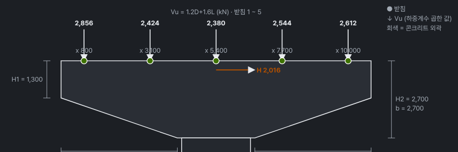
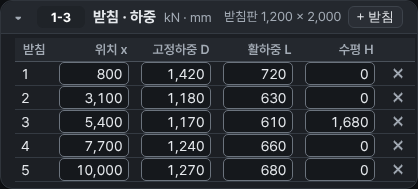
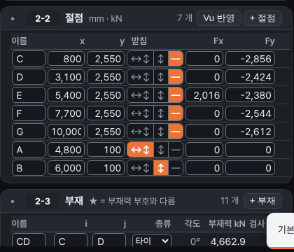
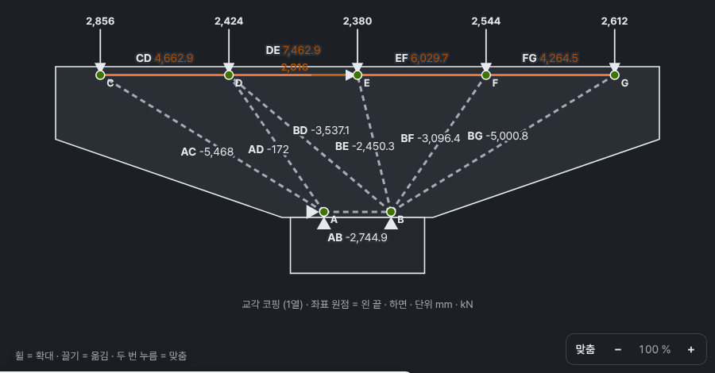
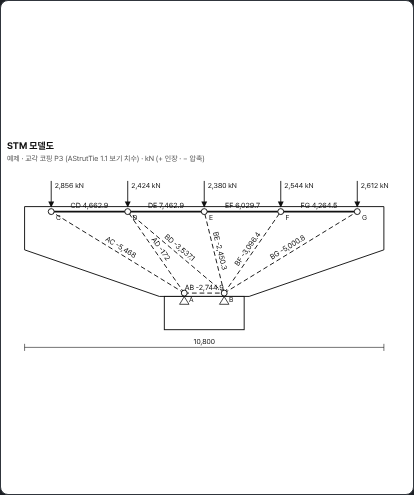
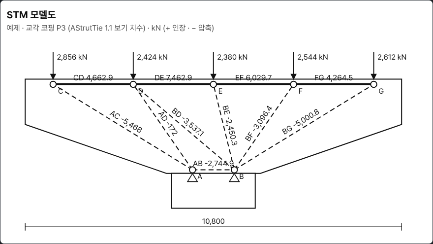

| 형식 | 범례 (위에서 아래로) |
|---|---|
| 깊은보 | ● 하중점 (받침판 자리) · ▲ 받침 · ↓ Vu (하중계수 곱한 값) · 회색 = 콘크리트 외곽 |
| 코핑 (1열 · 다열) | ● 하중점 (받침 x) · ↑ R 기둥 반력 · ↓ Vu · 회색 = 콘크리트 외곽 |
| 말뚝캡 | ● 기둥 하중점 · ▲ 말뚝 · ↓ Vu · 회색 = 콘크리트 외곽 |
| 확대기초 · 코벨 | ● 기둥 하중점 · ▲ 지반 반력 / 기둥 · ↓ Vu · 회색 = 콘크리트 외곽 |

| 받침 | 위치 x | 고정하중 D | 활하중 L | 수평 H | |
|---|---|---|---|---|---|
| 1 | 1,700 | 1,000 | 500 | 0 | ✕ |
| 2 | 2,300 | 1,000 | 500 | 0 | ✕ |
| 3 새 줄 | 2,950 | 1,000 | 500 | 0 | ✕ |
| 4 (직접 3,700 입력) | 3,700 | 1,000 | 500 | 0 | ✕ |

| 이름 | i | j | 종류 | 각도 | 부재력 kN | 검사 |
|---|---|---|---|---|---|---|
| CD | C | D | 타이 | 0° | 4,662.9 | |
| AD | A | D | 스트럿 | 54° | −172.0 | |
| BD | B | D | 스트럿 | 40° | −3,537.1 | |
| … 11 줄 다 보임 (카드 바닥 약 640 < 728) | ||||||


